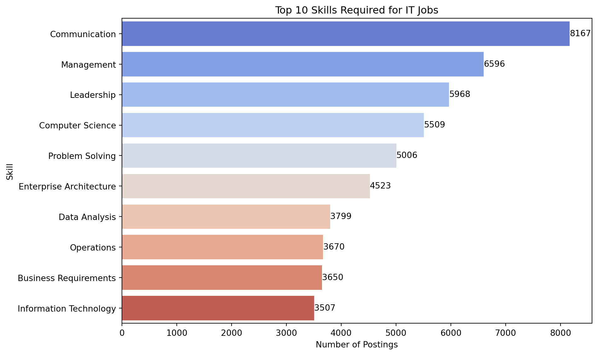
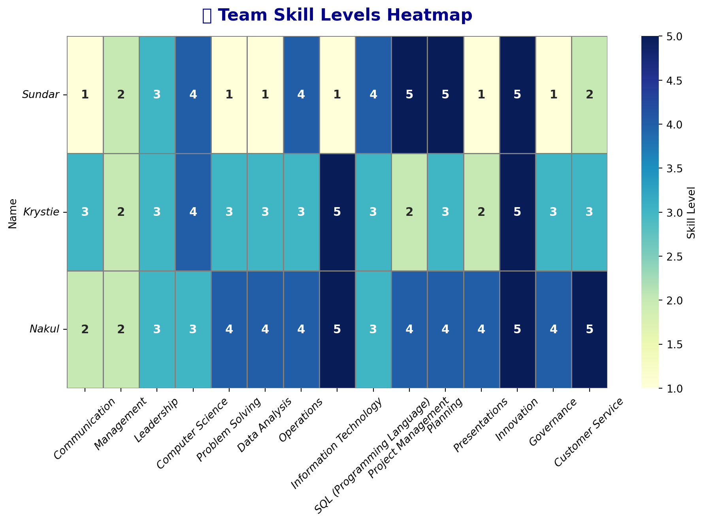
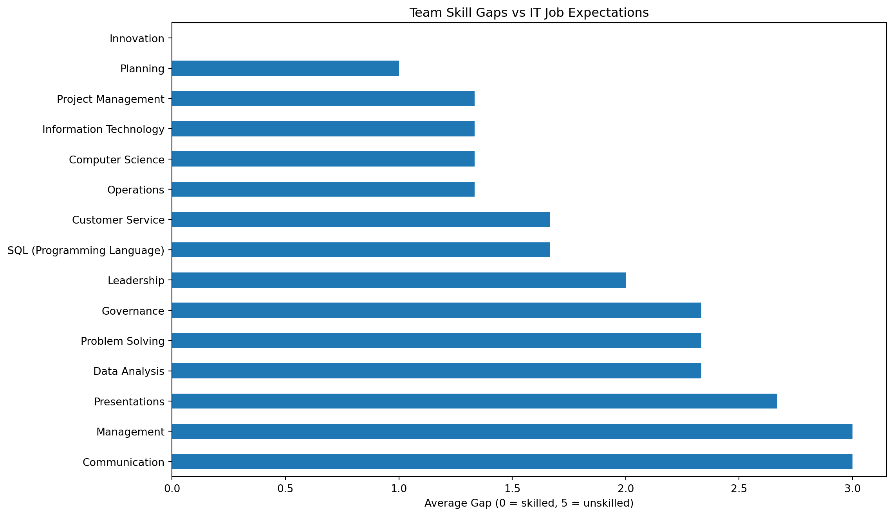

/tmp/ipykernel_12895/2462282455.py:3: DtypeWarning:
Columns (19,30) have mixed types. Specify dtype option on import or set low_memory=False.
Skill Gap Analysis
1 📥 Load Dataset
2 💼 Top Skills Required in IT Job Postings
/tmp/ipykernel_12895/1290477004.py:21: FutureWarning:
Passing `palette` without assigning `hue` is deprecated and will be removed in v0.14.0. Assign the `y` variable to `hue` and set `legend=False` for the same effect.

3 🧠 Team Skill Self-Assessment
| Communication | Management | Leadership | Computer Science | Problem Solving | Data Analysis | Operations | Information Technology | SQL (Programming Language) | Project Management | Planning | Presentations | Innovation | Governance | Customer Service | |
|---|---|---|---|---|---|---|---|---|---|---|---|---|---|---|---|
| Name | |||||||||||||||
| Sundar | 1 | 2 | 3 | 4 | 1 | 1 | 4 | 1 | 4 | 5 | 5 | 1 | 5 | 1 | 2 |
| Krystie | 3 | 2 | 3 | 4 | 3 | 3 | 3 | 5 | 3 | 2 | 3 | 2 | 5 | 3 | 3 |
| Nakul | 2 | 2 | 3 | 3 | 4 | 4 | 4 | 5 | 3 | 4 | 4 | 4 | 5 | 4 | 5 |
/tmp/ipykernel_12895/2854859582.py:17: UserWarning:
Glyph 128293 (\N{FIRE}) missing from current font.
/usr/lib/python3/dist-packages/IPython/core/pylabtools.py:152: UserWarning:
Glyph 128293 (\N{FIRE}) missing from current font.

4 📉 Team vs Market Skill Gap Analysis

5 🧑 Individual Skill Gap Summary
🧑 Sundar's top skill gaps:
Communication 4
Data Analysis 4
Problem Solving 4
Name: Sundar, dtype: int64
🧑 Krystie's top skill gaps:
Management 3
Presentations 3
Project Management 3
Name: Krystie, dtype: int64
🧑 Nakul's top skill gaps:
Communication 3
Management 3
Leadership 2
Name: Nakul, dtype: int646 📋 Personalized Recommendations
🧑💻 Sundar’s Skill Gaps: Sundar demonstrates equally high skill gaps across three critical areas: Communication, Data Analysis, and Problem Solving, each with a score of 4. This suggests that while he may have strong foundational knowledge, there is significant room for development in both technical and soft skills. Improving his data analysis capabilities could enhance his decision-making, while strengthening communication and problem-solving will boost collaboration and efficiency in cross-functional roles.
🧑💻 Krystie’s Skill Gaps :
Krystie’s top developmental areas are well-balanced and revolve around leadership-oriented tasks: Management, Presentations, and Project Management, all with a gap of 3. This points to a need for stronger execution and communication of strategic ideas. Enhancing her presentation skills, in particular, would enable her to convey ideas more convincingly, while project and team management improvements could increase her effectiveness as a future leader.
🧑💻 Nakul’s Skill Gaps :
Nakul continues to show moderate gaps in Communication and Management (3 each), with a slightly lower gap in Leadership (2). These gaps indicate that his development should focus on articulating ideas clearly and overseeing teams or tasks more effectively. While his leadership gap is lower, refining how he influences and guides others could elevate his contributions in group settings.